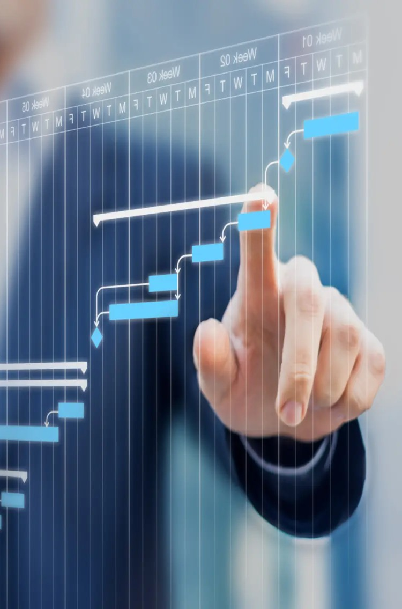
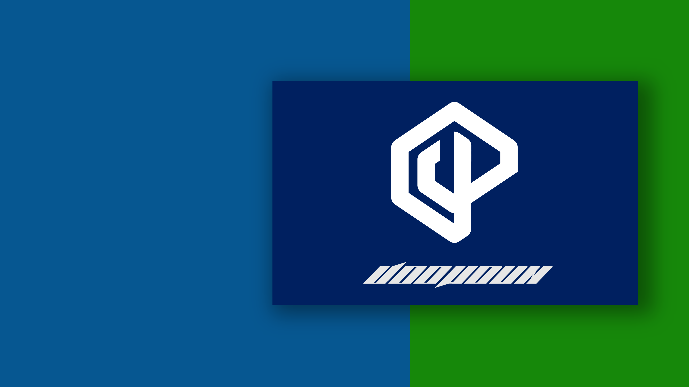
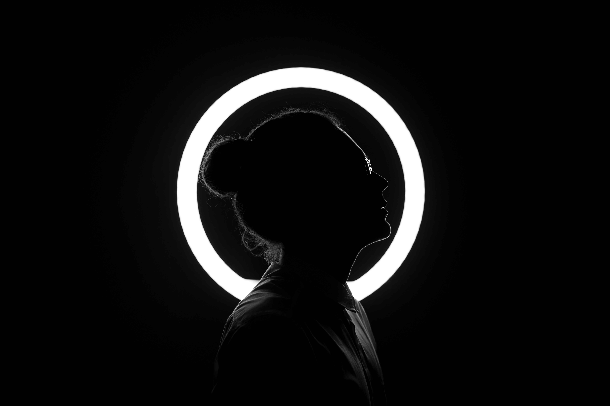

프로젝트 수행

우리는 4차산업혁명시대의 리더로서, 끊임없는 도전과 혁신을 통해
ICT산업의 미래를 이끌어가는 기업이라는 것을 자부합니다.


COMPANY
주연시스템즈는 항상 새로운 아이디어와 혁신적인 구축설계 감각을 바탕으로 다양한 ICT사업 분야에서 선도적인 역할을 수행하며,
미래에 걸맞는 혁신적인 서비스를 제공하는 IT회사로 꾸준히 성장하고 있습니다.

RECRUIT
우리의 기술은 뛰어납니다. 최첨단 기술과 첨단 장비를 도입하여, 현장에서 높은 품질과 서비스를 보장합니다.
또한, 지속가능한 ICT 성장에 대한 관심을 가지고, 혁신적인 기술과 방법을 적용하여 미래 세대를 위한 지속 가능한 ICT서비스를 추구합니다
자세히보기